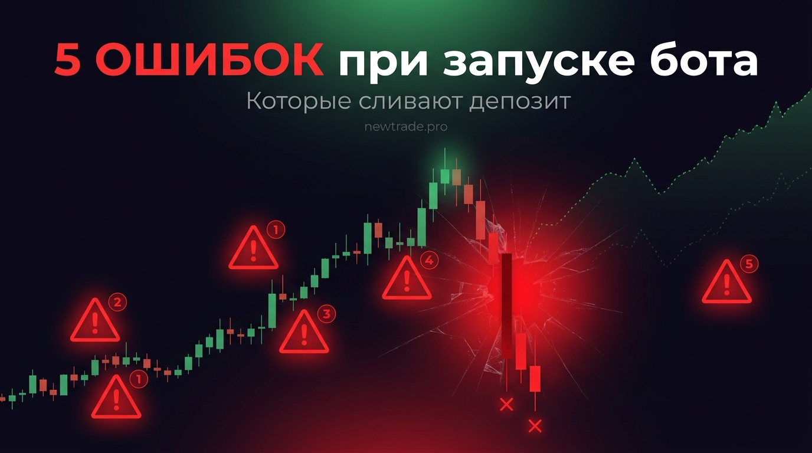

5 ошибок трейдеров, которые запускают бота без подготовки — и как их избежать

По статистике, большинство трейдеров, запустивших своего первого бота, сливают депозит не из-за плохой стратегии, а из-за элементарных ошибок при настройке и управлении. Ошибок, которые легко избежать — если знать о них заранее.
Эта статья — разбор пяти самых разрушительных из них. Каждую мы рассмотрим изнутри: как это происходит, почему приводит к потерям и что делать вместо этого. Плюс — реальные истории из практики трейдеров. В конце — тест готовности: честно ответьте на 10 вопросов и узнайте, стоит ли вам запускать бота прямо сейчас.
Если вы уже купили или скачали торгового бота, но ещё не запустили — эта статья может сохранить вам деньги. Если вы уже запустили и получаете неожиданные результаты — возможно, здесь вы найдёте причину.
Ошибка №1: Торговля без стратегии — «пусть бот сам разберётся»
Как это выглядит: Трейдер скачивает бота, видит кнопку «Старт» и жмёт её. Стратегия? «Ну, он же умный, сам что-нибудь найдёт». Параметры выставляются по умолчанию или наугад.
Почему это опасно: Бот — это исполнитель, а не мыслитель. Он делает ровно то, что ему сказано. Если правила входа и выхода размыты или отсутствуют — он будет открывать хаотичные сделки, которые в лучшем случае дадут случайный результат, в худшем — планомерно сольют депозит.
Как правильно: Прежде чем запускать любой алгоритм, пропишите стратегию на бумаге: при каком условии входим, при каком выходим, какой риск на сделку. Только когда вы можете объяснить правила своему другу — они готовы для автоматизации.
Ошибка №2: Торговля без стоп-лосса — «он и так восстановится»
Как это выглядит: «Зачем стоп? Крипта всегда отрастает». Трейдер убирает стоп-лосс, чтобы бот «не закрывал позицию в минус». Или выставляет стоп так далеко, что он фактически не работает.
Почему это опасно: Рынок не обязан восстанавливаться в вашу пользу — и уж точно не обязан делать это до того, как у вас закончится маржа. Торговля без стопа на фьючерсах — это ожидание ликвидации. На споте — замороженный капитал в убыточной позиции на месяцы и годы.
Как правильно: Стоп-лосс — это не признание поражения. Это часть стратегии управления капиталом. Устанавливайте его на основе ATR или значимых уровней поддержки. Правило: если стоп кажется «слишком большим» — уменьшайте размер позиции, а не убирайте стоп.
Ошибка №3: Чрезмерное кредитное плечо — «с плечом быстрее заработаю»
Как это выглядит: Трейдер видит: «с плечом 20x при движении цены на 1% я зарабатываю 20%». Логика железная. Он выставляет максимальное плечо и ждёт иксов.
Почему это опасно: Плечо работает симметрично: оно усиливает не только прибыль, но и убытки. При плече 20x движение против вас всего на 5% — и позиция ликвидирована полностью. На волатильном крипторынке 5%-ный откат — это рядовое событие, которое происходит несколько раз в неделю.
Как правильно: Для автоматической торговли криптовалютой оптимальное плечо — 1x–3x. Максимум для опытных — 5x. Это позволяет пережить глубокую коррекцию без ликвидации и даёт боту время отработать стратегию.
Ошибка №4: Отключение бота после убыточной серии — «стратегия не работает»
Как это выглядит: Бот закрывает 4–5 сделок в минус подряд. Трейдер паникует, решает, что стратегия «сломалась», и выключает робота — именно в тот момент, когда, возможно, начинается разворот.
Почему это опасно: Серии убыточных сделок — это математически неизбежная часть любой торговой системы. Даже стратегия с winrate 60% статистически даёт серии из 5–7 убытков подряд. Если выключать бота при каждой такой серии — вы будете фиксировать убытки и пропускать восстановление.
Как правильно: Определите допустимую просадку заранее — до запуска. Например: «Я остановлю бота только если просадка превысит 20% от пика». Всё остальное — плановая работа алгоритма. Оценивайте эффективность только на выборке от 50–100 сделок.
Ошибка №5: Торговля на «последние деньги» — «отобью и выйду»
Как это выглядит: Трейдер берёт деньги из заначки, занимает у друга или оформляет кредит — «ненадолго, отобью и верну». Он убеждён, что бот точно сработает, и психологически не готов к потерям.
Почему это опасно: Торговля на деньги, которые нельзя потерять, деформирует принятие решений. Трейдер начинает вмешиваться в работу бота, переставлять стопы, увеличивать объёмы — лишь бы «побыстрее вернуть». Стратегия ломается. Психологическое давление растёт.
Как правильно: Торговый капитал — это деньги, которые вы психологически готовы потерять полностью, и это не изменит вашу жизнь. Звучит жёстко — но именно такой капитал позволяет соблюдать дисциплину и давать стратегии время работать.
Бонус: ещё 3 ошибки, которые встречаются реже, но бьют не слабее
- Запуск бота на нескольких биржах одновременно без мониторинга. Кажется: «больше бирж — больше прибыли». На деле: сложность управления растёт экспоненциально. Синхронизация позиций, разные комиссии, разные лимиты — новичок теряет контроль. Совет: одна биржа, один алгоритм, пока нет уверенного понимания системы.
- Копирование чужих настроек без адаптации. «Вася в Телеграме поделился параметрами, у него +40% за месяц». У Васи другой капитал, другой риск-профиль и другой момент входа. Чужие настройки — это отправная точка для тестирования, а не готовое решение.
- Игнорирование комиссий и проскальзывания. Бэктест показал +15% за месяц? А вы учли комиссию 0.075% за каждую сделку? При 50 сделках в месяц это 3.75% только на комиссиях. Проскальзывание добавит ещё 1–2%. В итоге реальный результат может оказаться вдвое скромнее.
Тест: готовы ли вы запустить торгового бота прямо сейчас?
Ответьте честно на каждый пункт. Если утверждение верно для вас — засчитывайте баллы. Подведите итог в конце.
| Утверждение | Баллы |
|---|---|
| У меня есть торговая стратегия с чёткими правилами входа и выхода | 2 |
| Я провёл бэктест стратегии на 6+ месяцах истории | 2 |
| Я понимаю, что такое максимальная просадка и принимаю её | 1 |
| Мой стартовый капитал — деньги, которые не нужны мне в ближайший год | 2 |
| Я готов к серии из 5–10 убыточных сделок подряд и не выключу бота | 2 |
| Я настроил стоп-лосс в каждой сделке и не буду его убирать | 2 |
| Я использую плечо не выше 3x–5x | 1 |
| Я готов еженедельно анализировать результаты и вести журнал | 1 |
| Я не инвестирую «последние деньги» или кредитные средства | 2 |
| Я понимаю, что даже хороший бот может несколько месяцев работать в минус | 1 |
Интерпретация результатов:
| Баллы | Результат | Что делать |
|---|---|---|
| 0–8 | Не торопитесь | Рано запускать реального бота. Изучите основы управления капиталом, проработайте стратегию и потренируйтесь на Paper Trading. |
| 9–13 | Почти готовы | Хорошая база, но есть пробелы. Найдите слабые места по тесту и проработайте их перед запуском. Начните с минимального капитала. |
| 14–16 | Готовы к запуску | У вас правильный подход. Запускайте с небольшим капиталом, ведите журнал и анализируйте результаты. Постепенно масштабируйте. |
Вывод
Большинство из этих ошибок объединяет одно: желание получить результат быстро, не вложив время в подготовку. Рынок беспощаден к нетерпению — и очень щедр к тем, кто подходит к торговле системно.
Торговый робот — это усилитель. Он усиливает хорошую стратегию и дисциплину. Но он точно так же усиливает хаос и отсутствие системы. Потратьте время на подготовку — и автоматизация станет реальным преимуществом, а не источником убытков.
Нет ничего хуже, чем быстро потерять деньги на правильном инструменте — только потому что не было времени разобраться, как им пользоваться.
Бот, в котором уже учтены все эти ошибки
Торговый робот newtrade.pro разработан с учётом реальных рисков: встроенное управление капиталом, обязательный стоп-лосс, ограничение просадки и понятная логика стратегии. Готов к подключению к Bybit.
Узнать подробнее на newtrade.pro →